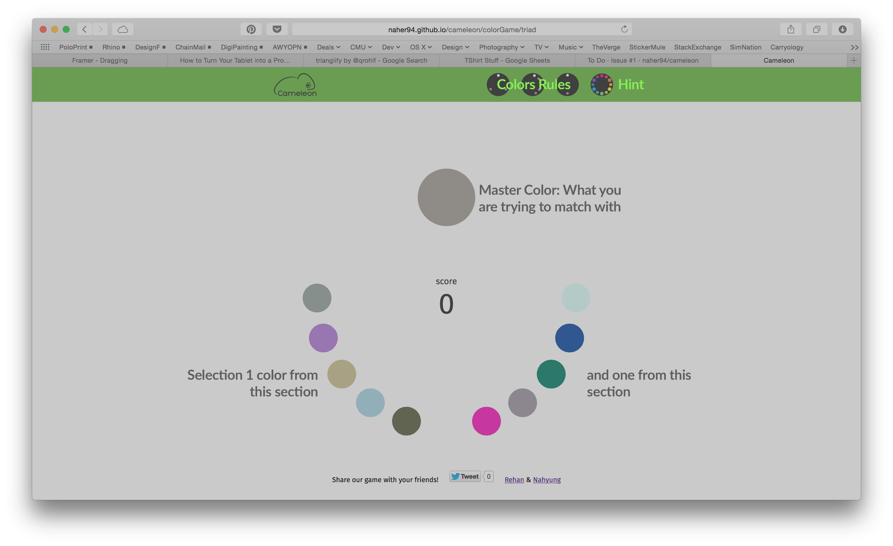

A coolsies game for helping and teaching designers about color and color theory to have a better understanding when creating color schemes rather than arbitrarily picking colors that looks “nice” together
written and designed by Rehan Butt and Nahyung Kim
This is a project for Design Communication, a web-based design interface research course. Students are to develop a prototype interface that augments design communication.
read a bit about our process and concept behind our game then go ahead and play it
JavaScript CSS HTML JQuery Transit TinyColor
These frameworks and libraries were used as tools to help us build our application. HTML and CSS were used as they are the basic foundation to web development. JavaScript, JQuery were used to develop a more sophisticated and modularized code base, using similar coding techniques to that of offline programing. The Transit library gave us an easy way to transform our DOM objects and TinyColor gave us some of the mathematical context behind calculating the color schema.

Cameleon’s interface represents a color wheel, so the player can visualize the various relationships between colors and color schemes. Three color rules, triad, tetrad, and complementary, are implemented in Cameleon. For each rule, one color will be given in a bigger circle and the player finds the other colors that goes in that scheme. The icons located at the top of the screen can be visual aid to understanding these relationships better.
Triad colors are three colors that are of equal distance from each other on the color wheel. Triad colors provide balanced color schemes for designers.
Complementary colors are two colors that are directly opposite from each other on the color wheel. These colors create the strongest contrast.

Tetrad colors create a scheme of several colors that are in the range of the two complementary colors, but not those two colors exactly. Cameleon generates four colors of which each pair is closer to each end of the spectrum.
Play! 
The use of colors in visual representation is critical to designers. We see and use the color wheel at almost every stage in the design process, in Rhino, Illustrator, etc. However, many of us do not understand the logic behind what makes certain schemes more effective than others in certain situations. As we read through texts about color theory, we thought that a more effective way of learning it could be through playing a game.
Our goal was to create a simple UI that represents the color wheel, making it easier for the players to visualize the different relationships of colors in different schemes. We diagrammed the color rules and made them into icons so that the theories and the game is more intuitive to the user.
Read more about our initial approach to our web-based tool